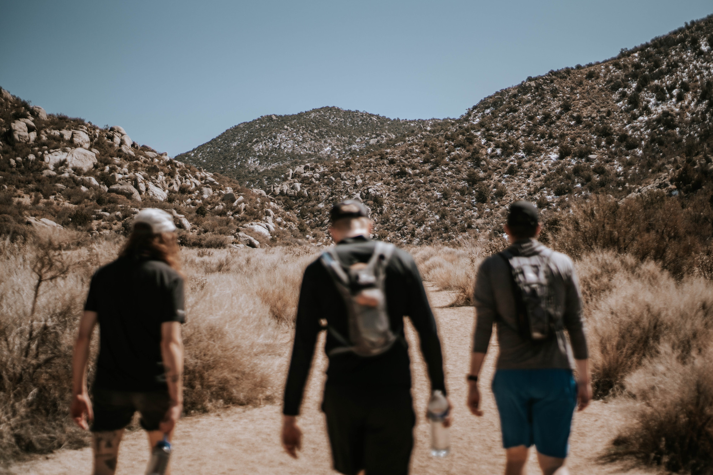

What we offer
As a group we aim to model healthy male behaviour. In our weekly meetings we work on ourselves and support each other in that work. From this we draw strength and experience enabling us to offer the following:
Mentoring:
Several of our members are available as mentors for younger men. This is one on one work over a period of time and it requires a strong willingness and commitment from the mentored man. Within the context of our group we have received mentoring training from both ABOB as well as individual elders of the New Mankind movement. This is further strengthened by professional individual expertise and experience of members of AB. Furthermore, whilst the mentoring sessions are one on one, each mentor is supported by the group as a whole. Apart from supporting the young man being mentored in his life and life choices we also aim to ready him for initiation (see below).
Mentoring philosophy:
We are working on the premise that raised awareness and self-reflection is
the path to empowerment and transformation. We’re helping young men gain a
wider and more objective perspective on their everyday world. We are also
helping them understand the role that they play in creating their own reality
and the potential impact they could choose to make in changing it for the
better. We’re helping them put words to feelings and become more in touch
with and conscious of these powerful forces.
We are raising awareness and broadening perspective both.
Most adult learning involves a certain amount of unlearning but our task as
mentors is never about making him wrong, rather more about pointing out
options and future choices that he perhaps hadn’t realised or thought about
before – in that sense we are opening up his “possibility sphere”, bringing in
other angles and showing that we always have choices in how we respond.
Role modelling, leading by example, trust
Weekly goals or stretches
Stimulating o new possibilities
Here are some key questions that we might ask in the mentoring process.
Please feel free to ponder these in regard to yourself:
What’s motivating you to stay out of trouble?
Who are the key people in your life?
What are the relationships that need repairing?
What are your major regrets?
What is a realistic short-term plan/strategy?
What inspires you in life?
Initiations/Rite of passage:
Male initiation is vital in building a safe and strong community. We are honoured to offer this service here in the Alpujarras:
open to any man, young or old, who is willing to make a change in their life, deal with their shit.. at this point adults only, 18+ because…
all traditional societies at one stage offered rite of passage rituals to both men and women, Whole village community, elders, wisdom being passed on.. very few modern men have gone through an initiation. it’s never too late, you can finally become a real grown up at age 18, 25, 40, 60 or even 85! What we do will be a surprise, expect the unexpected, be ready for a life changing experience. Precondition to joining is a real desire to ‘go there’, even if or especially when it involves making yourself vulnerable.
It takes a whole community to rear a child. Where that has been missing we hope to step in.
Also, as a strong group of willing and able men we offer support for local institutions, work days, cultural events…
Weekly meetings:
As what we do at our meetings is based on trust, confidentiality and the willingness to make oneself vulnerable and ‘go there’, we require a safe container and are therefore a closed group. The first step to joining is going through the initiation. Initiated men can then request to join the group and go through an induction process, being handed the tools and shown how to use them. Commitment
Wisdom of elders:
We are constantly being supported and trained by elders of the New Mankind movement and thus one of the points of dissemination of this beautiful transformative, both on a personal as well a a social level, movement. Open evenings with guest speakers